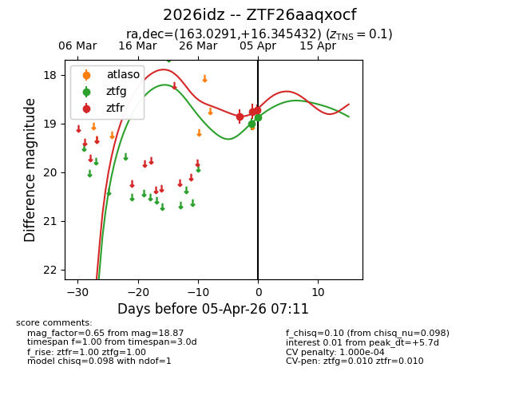
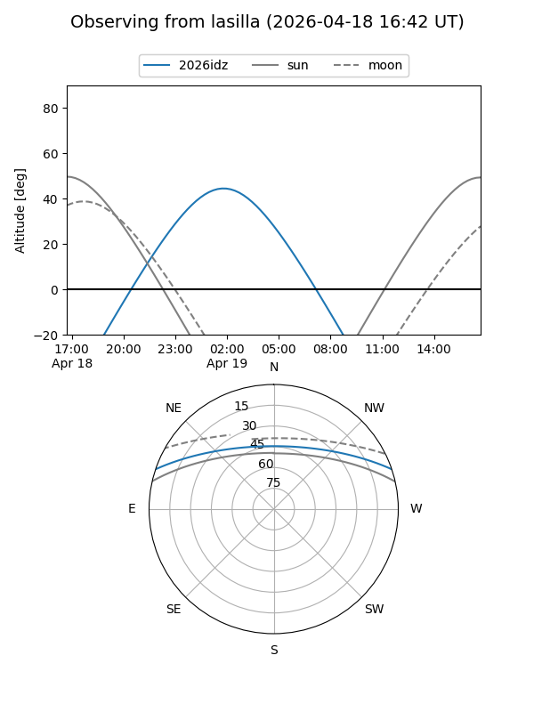
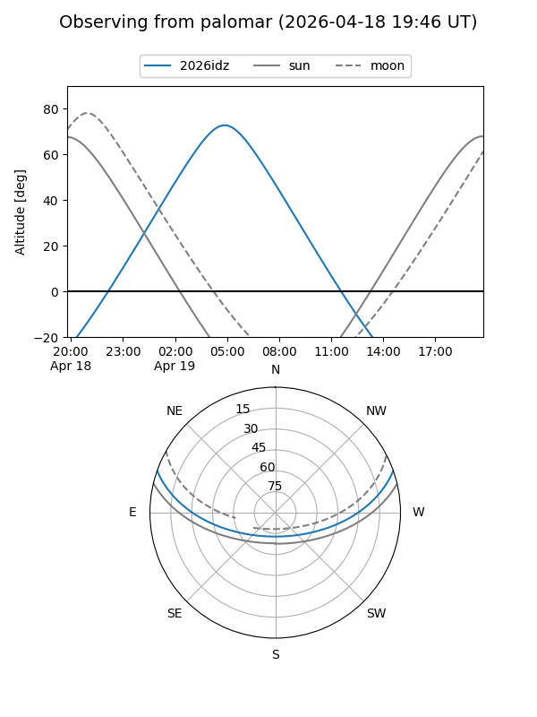
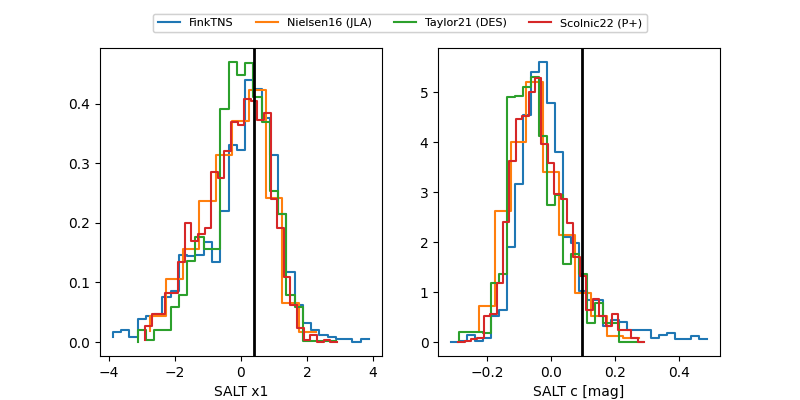

2026idz
Target 2026idz at 2026-04-05 07:14
Aliases and brokers:
FINK: link
Lasair: link
ALeRCE: link
TNS: link
YSE: link
alt names
ZTF26aaqxocf (ztf,fink_ztf)
2026idz (tns,yse)
Coordinates:
equatorial (ra, dec) = 163.0291,+16.34543
equatorial (HMS+DMS) = 10:52:06.99,+16:20:43.55
galactic (l, b) = (228.0676,+60.36441)
Flags:
confirmed ia
likely cv
Photometry:
last ztfg=18.87, ztfr=18.72
2 ztfg, 3 ztfr detections
Lightcurve

Visibility


Additional plots
